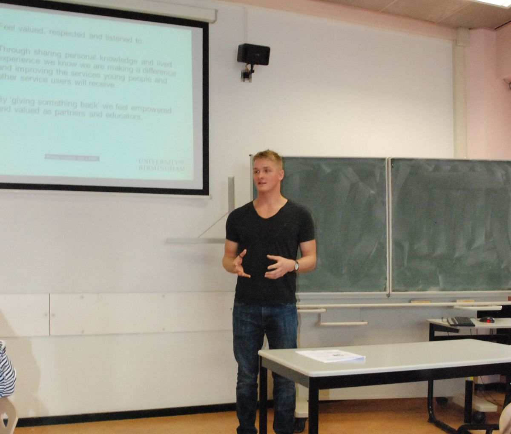
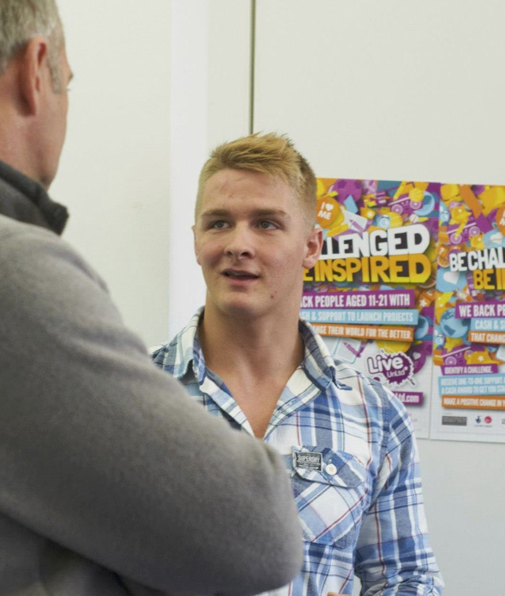
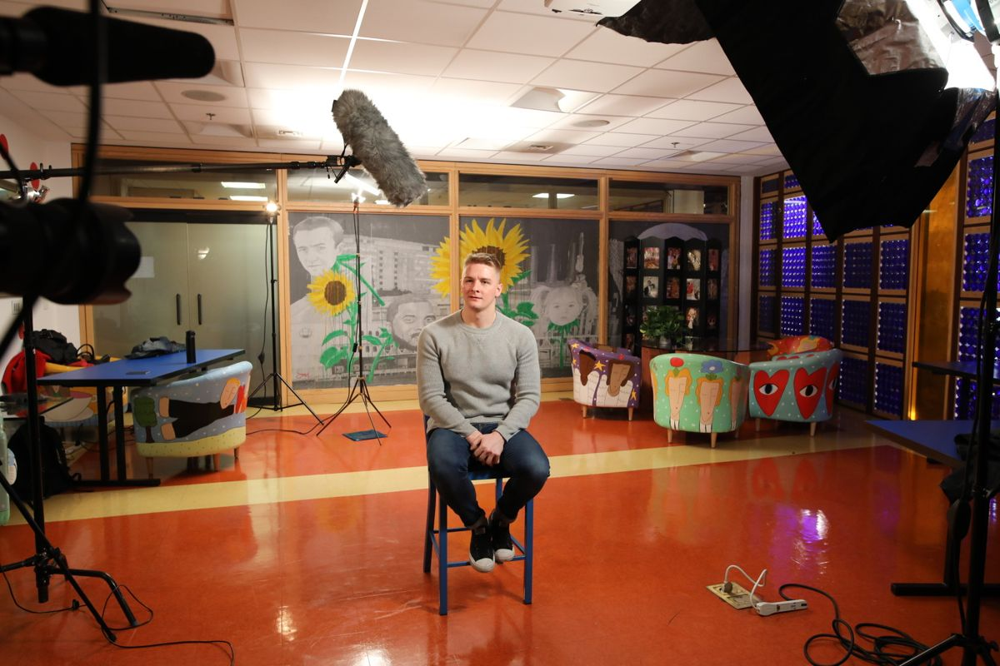
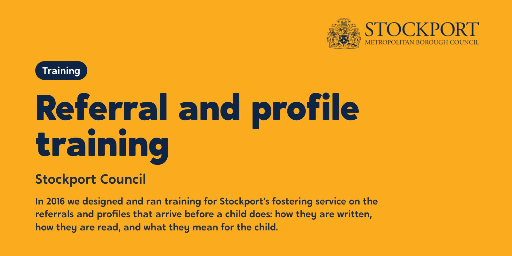
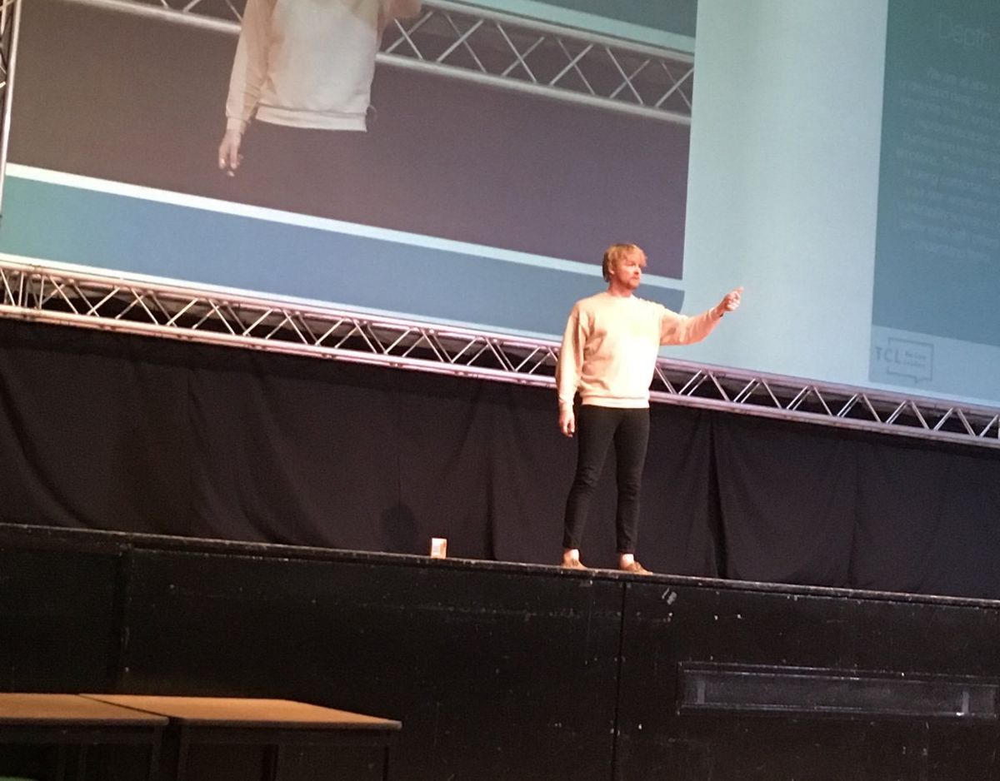
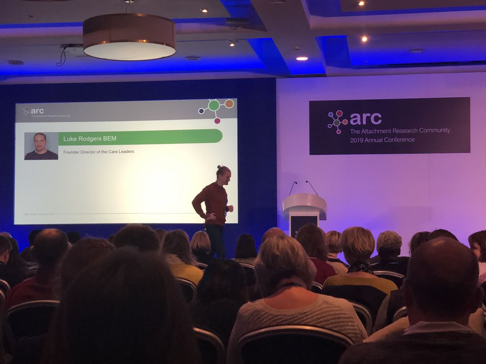
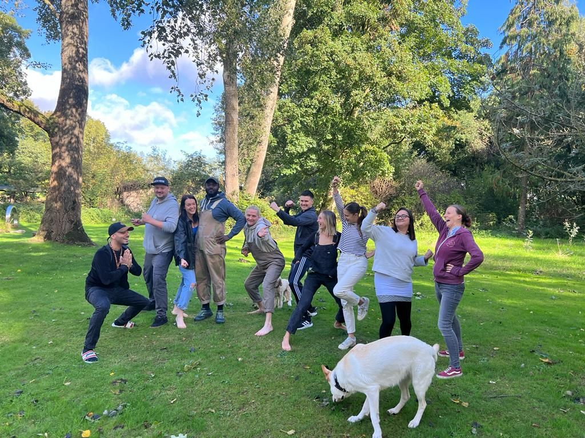

At a National Fostering Agency conference While studying for his A-levels at college, Luke was invited to speak to children in care at a National Fostering Agency event. He had been asked to talk about eating fruit and vegetables. One of the young people asked him to talk about his own experience of care instead, and he spoke for 20 minutes.
The NFA’s chief executive, Iain Anderson, asked him straight afterwards: “Can you do that at our national conference?” That was the first keynote, at 19.

Children & Young People Now, July 2012 In March 2012 Luke became a Young Person’s Ambassador for the National Fostering Agency, a role he held until 2014. He set up his first company, Luke Rodgers Training and Consultation, running workshops on resilience, behaviour and empathy.
That July, Children & Young People Now profiled him as a “role model of resilience”.
Sources CYP Now, Role model of resilience (July 2012)Luke’s LinkedIn

Teaching social work students Luke began working with universities, speaking to social work students about how children may be feeling in the situations they will meet. In 2012 he also worked with Buttle UK on its Quality Mark for care leavers, and with the University of Applied Sciences Rotterdam.
Sources CYP Now, Role model of resilience (July 2012)Luke’s LinkedIn

Collecting the award, Children & Young People Now Awards 2013 Luke won an achievement award at the Children & Young People Now Awards 2013. Ten years later, The Care Leaders would win a Children & Young People Now award of its own.
The same year he joined a British Council Active Citizens study visit to Serbia, and then the Through Our Eyes project in Belgrade.
Sources Luke’s LinkedIn

At an UnLtd event With backing from UnLtd, Luke ran his first social enterprise, building youth participation strategies with children’s services. In 2014 its peer-led leadership training reached 1,000 children in care.
He joined the EY Foundation’s Accelerate programme, the advisory board of the Rees Centre at the University of Oxford, and the UKCP advisory board.
Sources International Youth Foundation, 2015 Laureate Global FellowsLuke’s LinkedIn

Young Social Entrepreneur Award, judges’ choice, 2014 Luke won UnLtd’s Young Social Entrepreneur Award as the judges’ choice.

Filming in the United States during the fellowship The International Youth Foundation named Luke a 2015 Laureate Global Fellow, alongside young social innovators from around the world.
In November he received a Shackleton Leadership Award. He also became a Social Entrepreneur Fellow at the School for Social Entrepreneurs, and joined the programme board for the Mockingbird Family Model at The Fostering Network.
Sources International Youth Foundation, 2015 Laureate Global FellowsShackleton Foundation, November 2015Luke’s LinkedIn

National Diversity Awards 2015, Liverpool Anglican Cathedral On 18 September 2015 Luke won Entrepreneur of Excellence at the National Diversity Awards.
Sources National Diversity Awards 2015

Making York Home As part of Innovation Unit’s team, Luke brought young people in care into the design of Making York Home, City of York Council’s plan for every child in its care to be fostered in York.
Sources Case study: Making York Home

Referral and profile training, Stockport Council Luke designed and ran training for Stockport’s fostering service on referrals and profiles: how they are written, and how they shape what happens to a child before anyone has met them.
Sources Case study: Stockport

Speaking for The Care Leaders In May 2017 Luke founded The Care Leaders: a children’s social care consultancy that brings lived experience of care and professional experience into the same room. He led it as Director of Strategy.
Sources Luke’s LinkedIn

Rotherham MBC The Care Leaders asked young people, care leavers and professionals how Rotherham’s children’s services looked from where they stood.
Sources Case study: Rotherham
Luke was awarded the British Empire Medal in the 2018 Birthday Honours, for his commitment to children and families.

A Care Leaders keynote, 2018 The Care Leaders took its approach to conferences and staff days: stories of care, the theory behind them, and tools people use the next day.

The Care Leavers National Movement Working with The National House Project, The Care Leaders trained 12 care-experienced young people from six local authorities in leadership and social entrepreneurship. They formed the Care Leavers National Movement, which Luke founded.

ARC annual conference, 2019 Luke spoke at the Attachment Research Community’s 2019 annual conference as Founder Director of The Care Leaders.

Oxfordshire Youth The Care Leaders helped Oxfordshire Youth shape a youth work approach to supported accommodation for young people aged 18 to 24.
Sources Case study: Oxfordshire Youth
Luke was invited to be a Knowledge Equity Fellow at the Skoll Centre for Social Entrepreneurship, Saïd Business School, University of Oxford.
Sources Luke’s LinkedIn

The Middlesbrough Children Matter brand Middlesbrough Council was in special measures after an inadequate Ofsted judgement. The Care Leaders helped it build a vision the whole service could own, with young people: Middlesbrough Children Matter.
The first cohort of The Care Leaders Fellowship came together: people with an idea, project or business that solves problems for care-experienced people, working through the Five S framework with retreats and monthly sessions.
Sources The Care Leaders Fellowship
Luke became a non-executive director of The Staff College, and a director of The Care Leaders Fellowship CIC.
Sources Luke’s LinkedIn

The Family Business, Suffolk Suffolk wanted its care leavers to experience the council as a family business: real jobs, real employers and someone in their corner. The Care Leaders built it with them.
Sources Case study: Suffolk

PROCLAIM, Middlesbrough Council PROCLAIM is Middlesbrough Virtual School’s ambition for every school in the town to be attachment aware and trauma informed. The Care Leaders gave it a brand and a programme.
Sources Case study: PROCLAIM

Children & Young People Now Awards 2023, winner The Care Leaders won the Children & Young People Now Workforce Development Award, for work that combines lived and professional insight, ten years after Luke’s own award from the same awards.
In November 2023 Luke became Chief Executive of The Care Leaders.
Sources Luke’s LinkedIn

New World, New Skills, PwC With PwC, The Care Leaders opened New World, New Skills days to care leavers, so they could see what a career in business looks like.
Sources Case study: PwC

Fellows on retreat, 2023 A second cohort of Fellows came together in 2023, followed by a third in 2025.
Sources The Care Leaders Fellowship

Luke on stage Luke has given more than 45 keynotes since the start of 2024, to rooms of 30 to 400 people, from team days to national conferences.
Sources Keynotes

Bridge and Beyond, Staffordshire In Staffordshire, four organisations asked The Care Leaders to help design Bridge and Beyond, for a small group of children moving between hospital, care and school.
Sources Case study: Bridge and Beyond

NVR training for Durham’s children’s homes Durham asked The Care Leaders to give every residential worker another way to respond when a young person’s behaviour escalates. We trained 120 staff across 11 children’s homes in non-violent resistance.
Sources Case study: NVR in Durham

Durham Cares Durham Cares is the council’s vision for children in care, co-designed with the people who will live it.
Sources Case study: Durham Cares

The Designated Leaders Programme Designated teachers in Darlington said most of their training ticked a box and changed nothing. So they designed the alternative with us: the Designated Leaders Programme.
Sources Case study: Darlington

NAVSH annual conference, 2025 
Rising Futures, Liverpool Virtual School Delegates at Liverpool Virtual School’s 2024 conference asked to hear from young people directly. For 2025 we helped produce a conference with young people at the front.
Sources Case study: Liverpool
In June 2025 Luke gave a keynote to Raising Expectations in Victoria, Australia.

The Care Leaders Summit, 26 February 2026 On 26 February 2026 The Care Leaders Summit brought councils, virtual schools, charities and businesses together, with Fellows leading the sessions.

iESE Public Sector Transformation Awards 2026, Gold winner The Care Leaders won Gold, Dual Perspective Leadership Award, at the iESE Public Sector Transformation Awards 2026, for combining lived and leadership experience in our work with councils.
From May 2026 Luke led the national engagement on the Department for Education’s rewrite of the Fostering Services National Minimum Standards.
Sources Luke’s LinkedIn

Mentors Who Care With Norfolk Virtual School, The Care Leaders began Mentors Who Care: care-experienced adults trained, coached and supported to mentor children in care.
Sources Case study: Norfolk

Why Care and The Care Leaders In October 2026 Luke became Head of Partnerships at Why Care, The Care Leaders’ fostering partner.
Sources Why Care partnership

The Care Leaders Fellowship The next Fellowship cohort starts in March 2027, and the work goes on: consultancy, programmes and training for children’s services, led by people with lived and professional experience of care.
Our story
From care leaver to care leader.
At 19, Luke Rodgers BEM gave his first keynote at a National Fostering Agency event. He has spent his career since then inside children’s services, bringing his lived experience of care and his professional experience into the same room. This is the story of how that became The Care Leaders.
Choose a part of the story, then open any moment to read more and share it.